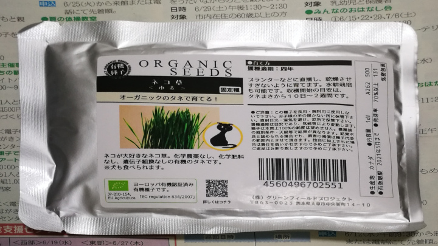
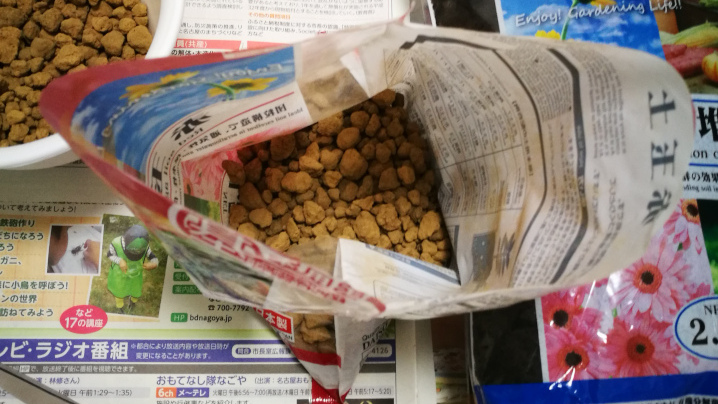
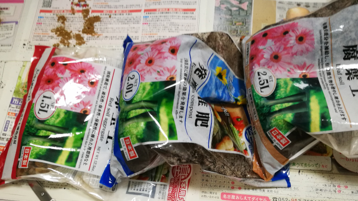

うちのうさ子に喜んでほしくて、生チモを育てることにしました。
家庭菜園なんて生まれてこの方、やったことも見たことも聞いたことも無いので、適当です。
参考になるかは分からないけど、一応手順を載せておきます。
反面教師と思って役に立ててね。
ダイソーで家庭菜園に必要なものを集める
土
これがないと始まらない。土です。
ダイソーに三種類あったので、とりあえず買ってきました。
- 赤玉土1.5L 100円
- 発酵堆肥2.0L 100円
- 腐葉土2.5L 100円
種類多いけど何が違うのか良くわかりません。特に、発酵堆肥と腐葉土の違いが分からない。
植木鉢と適当に必要そうなもの
あと他に、適当に必要そうなものも買いました。
- 植木鉢5号 2個で100円
- じょうろ 1個200円！！！
- シャベル 1個100円
- 軍手 3セット100円
じょうろだけ200円でした。植木鉢は2個で100円のを2セット分買いました。
軍手は買ったけど使わなかった。しゃべるだけで十分でした。
ダイソーに無かったからアマゾンで種を購入
流石に、ダイソーに牧草の種なんて売って無かったので、アマゾンで買いました。
成長過程の違いや、食いつき加減も知りたかったので、とりあえず２種類です。
ネコ草（小麦）の種

ネコ草って何か分からなかったけど、小麦のことみたいです。一つ勉強になりました。
カナダ産、1袋79gで540円。高い。
特徴
1 | ヨーロッパ有機認証取得の無農薬・無化学肥料で栽培・採種された小麦のキャットグラスのタネ。 |
栄養
1 | ネコ草4gに含まれる主な成分: |
育て方
1 | 日当たりの良い場所で育てる。 |
エン麦の種
よく分からないペットが食べる草の種です。小さくエン麦って書いてあった。もっと分かりやすく書いてほしいです。
オーストラリア産、1袋にめちゃくちゃ入ってて1,145円。無駄に高い。もっと小分けで売って欲しい。
袋にチャックが付いているから、保存はしやすそう。
１袋(1L)で約33回分って書いてあった。
育て方
1 | 適当な容器と適当な土でいい。 |
育て方がふざけ過ぎてる。もう、書くの嫌になってきた。
植木鉢に土をいれる
気を取り直して、実際にやってみます。
最初に赤玉土を敷き詰める
赤玉土とはこんな土！
なにこれ、土じゃないじゃん。でも、大丈夫一番下に敷き詰めるだけのために、存在しているみたいです。
各植木鉢に４分の１ぐらい敷き詰めてみた。こんなんで本当に大丈夫なんか…。
だいぶ余ってしまった。使い切るのは難しい。

次に発酵肥料を敷き詰める
封を開けた途端に、独特な匂いがします。
室内で作業しない方がいいです。するとしても、換気をしながらしないと、部屋中すごいことになります。
室内での作業はオススメしません。
真っ黒です。

一応、敷き詰めたけど、全然減ってません。発酵肥料は要らないと思います。
腐葉土だけでいいかも。
最後に腐葉土を敷き詰める
発酵肥料と同じ見た目してる。
けど、匂いはしないです。絶対に、腐葉土を買ったほうがいい。
発酵肥料よりは黒くはない、こっちの方が、自然の腐葉土な感じがして好き。
結局、全ての土が余った。赤玉土と腐葉土だけを買えば、ちょうどよかったと思う。
種をまく
ネコ草の種をまく
先に、小さい方の袋の種から植えてみます。
玄米みたいな色と形をしていて、とりあえず一粒食べてみたけど、パサパサで身は感じられませんでした。
米みたいに、身がぎっしりじゃないです。
パラパラと均一になるように撒いてみました。
水を上げて、この記事を書いている時に知ったのですが、もっとギッシリ敷き詰めるように撒いたほうがいいみたいです。
これだと、満足感が得られないみたい。
ネコ草の種を撒いたということで、植木鉢に名前を書いておきました。
ネームプレートがあればよかったのですが、無いから直接書いた。
消せないから、この植木鉢はずっとネコ草を植えないといけません。
エン麦の種をまく
続いて、エン麦の種を撒きます。
ネコ草とは違って、細長い種をしています。種で見間違えることは無いね。
味は同じ感じでした。パサパサのスカスカ。米の方が美味しいです。
同じ感じで撒いたけど、こっちもギッシリギューギューに撒いてよかったみたい。
土をかぶせる
４つの植木鉢に種を撒いたので、土を被せます。
若干、種が見えちゃってるけど気にするつもりはありません。
実際は、鳥に食べられるからちゃんと土を被せたほうがいいですよ。
たくさんの水を上げる
ここからは、ダイソーで買った200円のじょうろの出番です。
植木鉢をベランダに持っていって、たくさんの水を上げました。
でも、このじょうろ水漏れします。200円もしたのに水漏れ。
駄目です。別のじょうろを買ったほうがいい。
残ったものは涼しくて暗いところで保管する
残った種はジップロックに入れた
案の定残ったので、ジップロックに乾燥剤と一緒に入れて戸棚にしまいました。
残った土は流し台の下で保管
土も大きめな袋に入れて、流し台の下にしまいました。

反省点
発酵堆肥はいらない
うさぎのおやつ程度の草なら、赤玉土と腐葉土だけで十分だと思いました。
もっと言うと、砂場の土でもいいんじゃないかな。
まあ、砂場の土を無断で持ち帰ると、窃盗罪で捕まるので駄目ですよ。
種は美味しくありません
食べないほうがいいです。食べてもいいけど、自己責任でお願いします。
ダイソーじょうろは駄目
首の部分が２段構造になっているからか、そこから水が漏れました。
コップややかんで水は上げれるので不要です。
種はみっちりぎゅうぎゅうに撒きましょう
事前に調べなかった私が悪いのですが、ぎゅうぎゅうに撒きましょう。
複数種類を育てるならネームプレートが便利
ネームプレートが無いと、直接、植木鉢に書かないといけないので、あれば便利です。
まとめ
今回は、初めての家庭菜園だったので調査不足でした。
手順が悪かったり、無駄なことしてたりと見苦しい点も多々合ったと思いますが、次回作にご期待下さい！。
成長日記も書いていきます。
今後も何卒よろしくお願い致します。
収穫しました
2019/06/30 に収穫しました。